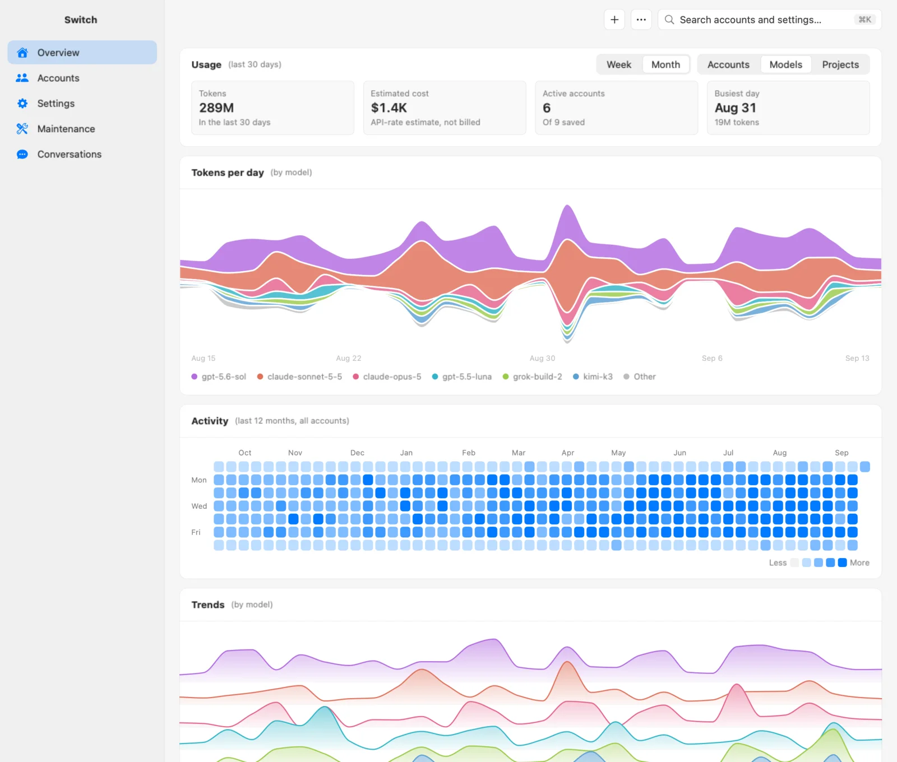
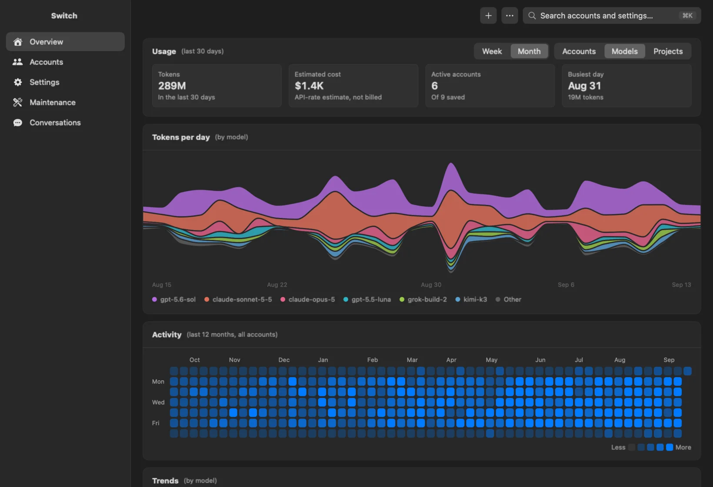
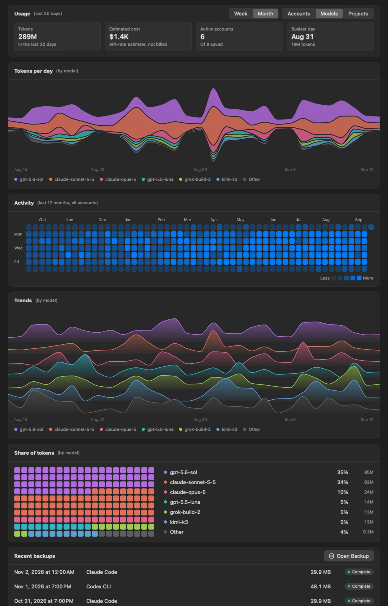

Keep saved logins for your coding tools. Choose another supported account when you need it.

Works with
It checks usage every three minutes, is done in under a second, then sleeps.
Electron apps on the same Mac used 170 to 520 MB.
No Electron or web views. The interface uses native Mac controls.
Download one signed, Apple-notarized ZIP.
Measured on Switch 3.8.2 on an Apple silicon Mac, over a day of running.
Keep a default account for each supported tool. Choose another saved login when you need it.
Select an account, then choose Switch.
Switch saves the outgoing login and backs up replaced data. Local settings and supported history stay in place.
Choose another saved account before a usage window runs out.
Replace email addresses with stable aliases when you share your screen.
See daily tokens, activity, account trends, and estimated API costs.


New sign-ins use a private temporary home, separate from your active login.
Switch saves the old login and backs up data before replacing it.
Switch does not read the macOS Keychain or browser cookie stores.
MIT licensed. The Mac download is signed and notarized.
Use the same saved accounts from the command line.
Available on Mac and Linux. The npm package is Mac-only.
npx --yes @smdl/switchFor other questions, open an issue on GitHub.
Save logins, check usage, and choose an account from the menu bar.